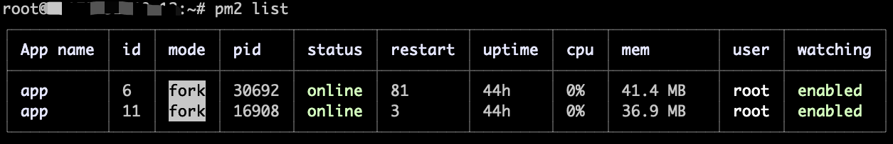

概念
PM2（process manage）是JavaScript运行时Node.js的进程管理器。
基本操作
安装
1 | # 借助npm包管理器安装 |
启动进程
命令行启动
默认启动
1
2启动一个nodejs进程，进程名默认为nodejs文件名，默认为fork单进程模式
pm2 start app.js自定义启动
1
2启动并自定义进程名
pm2 start app.js --name processNames负载均衡
1
2负载均衡（服务器只是满足双核及以上），max为默认最大cpu数，可以自定义
pm2 start app.js -i max目录监听
1
2监听目录变化，默认不启动
pm2 start app.js --watch携带参数启动
1
2携带test和100启动进程
pm2 start app.js -- -test -100
配置启动脚本
首先，编辑启动脚本内容
1
2
3
4
5
6
7
8
9
10
11{
"apps": [{
"name": "app1",
"script": "./app1.js",
"watch": true
}, {
"name": "app2",
"script": "./app1.js",
"watch": false
}]
}然后执行启动命令
1
pm2 start app.json
重启进程
- 重启/更新单个进程
1
2
3
4# 重启0进程
pm2 restart 0
# 更新0进程
pm2 reload 0
区别：重启的过程是先停止（stop）进程，然后再开启（start）进程，可能会造成已建立连接的实效；更新的过程是先开启（start）一个或者若干进程，同时停止旧的进程接收请求，然后旧的进程结束以后，再关闭旧的进程。
重启/更新所有进程
1
2
3
4# 重启所有进程
pm2 restart all
# 更新所欲进程
pm2 reload all优雅的更新一个/所有进程
1
2
3
4# 优雅的重启0进程
pm2 gracefulReload 0
# 优雅的重启所有进程
pm2 gracefulReload all
备注：gracefulReload区别于reload的地方在于，会发送一个shutdown的消息给旧的进程，这个过程可以在程序中监听到，然后根据自己的业务逻辑进程处理。1
2
3
4// 这里我们可以监听到‘shutdown’，然后在里面可以自定义一些跟自己项目相关的业务逻辑
process.on('shutdown', function () {
server.close();
});
进程日志
1 | # 实时查阅进程0的日志 |
停止进程
1 | # 停止0进程 |
删除进程
1 | # 删除0进程 |
进程列表
1 | # 查看进程状态 |

进程监控
1 | # 监控所有进程的实施状态 |
保存配置
1 | # 保存当前所有进程任务 |
还原配置
1 | # 还原最后一个保存的所有进程任务 |
应用场景
守护进程
当进程出现崩溃、异常停止等现象时，pm2会帮你重启该进程。
进程监控
实时查看进程的cpu、内存占有情况以及运行状态等。
日志管理
所有pm2日志会默认保存在～/.pm2/logs目录下，以进程名命名生成相应的日志文件，可以借助pm2-logrotate模块实现日志的按时间或者大小切割，便于归档记录，排查故障。